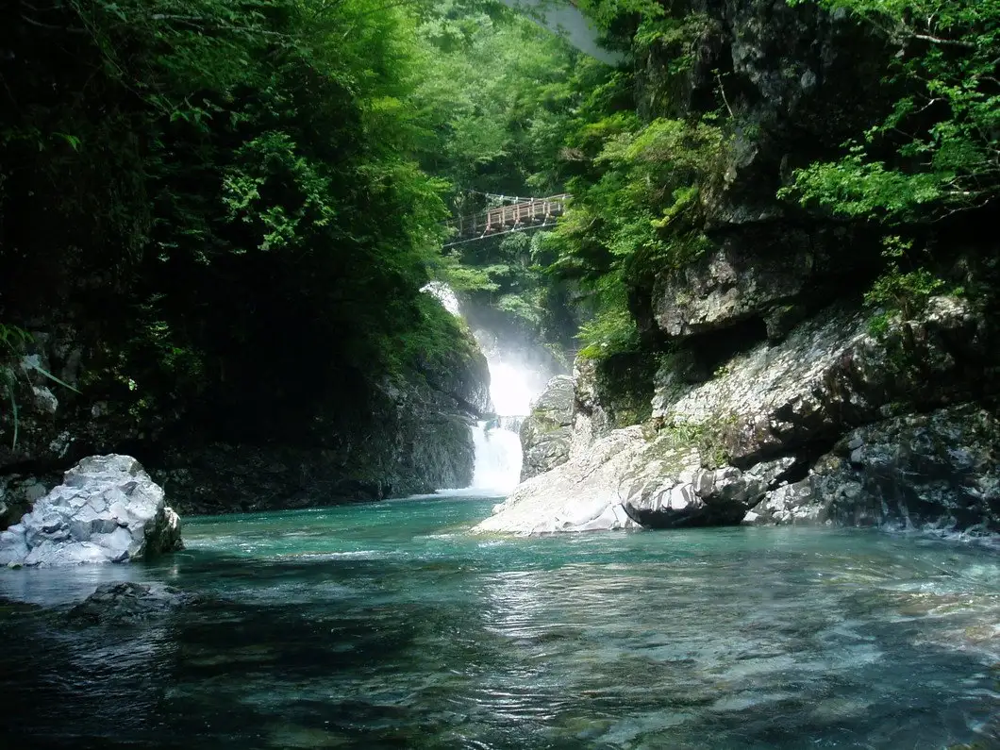
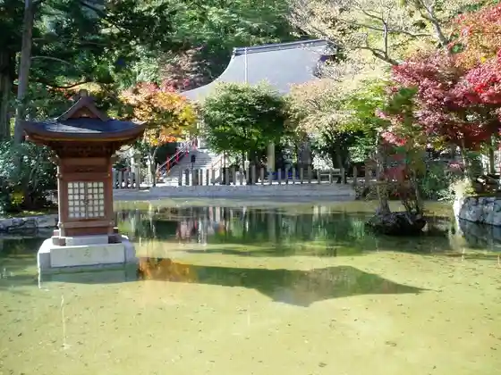
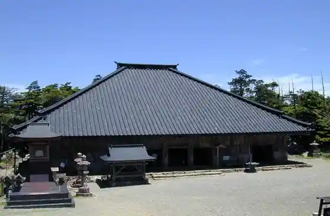
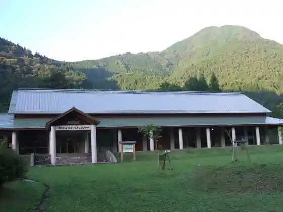
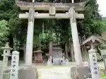

Tenkawa
Tenkawa · Nara
Tenkawa
Highlighted on the Nara map.

Sights
Mitarai Gorge
Omine Yama Ryusen Tera

Omine Yamadera

Tenkawa Dokawa Eko · Museum Center

Tensui Fun Shrine

Tenga Shrine (Tenga Daiben Zai Amatsuyashiro)
Misen · Hachi Keigagaku